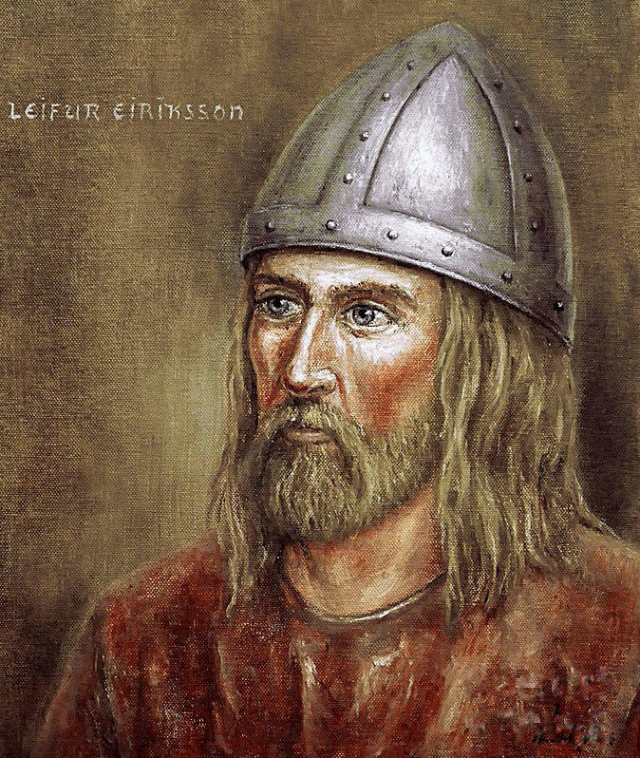

LEIF ERIKSON
¿Quién fue Leif Eriksson?
Leif Erikson, también conocido como Leif el Afortunado, fue un explorador nórdico que vivió alrededor del año 970 hasta aproximadamente el 1020 d.C. Hijo del famoso Erik el Rojo, fundador de la colonia vikinga en Groenlandia, Leif es célebre por haber sido, según varias fuentes, el primer europeo en llegar a América del Norte, siglos antes de Cristóbal Colón. Su figura es fundamental en la historia de los descubrimientos geográficos, y su legado ha cobrado un creciente interés histórico, cultural y académico.
Orígenes y Juventud
Leif nació en Islandia, aunque creció en Groenlandia, en una sociedad profundamente influenciada por las tradiciones vikingas. Su padre, Erik el Rojo, era un hombre de carácter fuerte y audaz, que había sido exiliado de Noruega y posteriormente de Islandia, lo que lo llevó a fundar una colonia en Groenlandia alrededor del año 985. La infancia de Leif se desarrolló en un entorno de exploración, desafíos naturales extremos y una cultura marinera que valoraba la valentía, la navegación y la aventura.
Como era común entre los vikingos de su época, Leif aprendió desde joven a manejar embarcaciones, a orientarse por las estrellas, y a sobrevivir en condiciones hostiles. A diferencia de otros jóvenes vikingos, sin embargo, Leif también demostró un carácter reflexivo y una apertura hacia nuevas ideas.
Viaje a Noruega y Conversión al Cristianismo
Alrededor del año 999, Leif viajó a Noruega, donde fue recibido por el rey Olaf Tryggvason. Este monarca, ferviente cristiano, tenía el objetivo de convertir a los pueblos nórdicos al cristianismo. Durante su estancia en la corte noruega, Leif se convirtió al cristianismo y fue instruido en la nueva fe. A su regreso a Groenlandia, llevó consigo a un sacerdote para evangelizar a sus compatriotas, incluida su familia.
Este episodio marcó un cambio importante en la historia cultural de Groenlandia, ya que Leif fue uno de los primeros en promover activamente la cristianización en esa región. Sin embargo, su padre Erik el Rojo se mostró reacio a abandonar la fe pagana nórdica.
El Viaje a América del Norte
El mayor logro por el que se recuerda a Leif Erikson es su exploración hacia el oeste, más allá de Groenlandia. Según la Saga de los Groenlandeses y la Saga de Erik el Rojo, Leif escuchó historias sobre tierras ubicadas al oeste de Groenlandia, narradas por un comerciante llamado Bjarni Herjólfsson, quien había avistado esas tierras sin desembarcar en ellas. Leif compró el barco de Bjarni y se propuso llegar a esas misteriosas costas.
En su travesía, Leif y su tripulación llegaron a varias tierras. La primera fue una región rocosa que él llamó Helluland (“Tierra de las piedras planas”), probablemente la actual isla de Baffin. Más al sur hallaron Markland (“Tierra de los bosques”), posiblemente Labrador. Finalmente, llegaron a un lugar fértil, con clima templado y vegetación abundante, donde encontraron uvas silvestres, lo que motivó el nombre de Vinland (“Tierra del vino”).
Leif y sus hombres construyeron un asentamiento al que llamaron Leifsbúðir (“los campamentos de Leif”). Aunque no está claro cuánto tiempo permanecieron allí, se estima que pudieron haber pasado al menos un invierno. Los estudios arqueológicos modernos, especialmente en el sitio de L’Anse aux Meadows, en Terranova (Canadá), han confirmado la existencia de un asentamiento vikingo en América del Norte, que data de alrededor del año 1000, coincidiendo con las sagas.
Importancia del Descubrimiento
El viaje de Leif Erikson a América es significativo por muchas razones. Fue el primer europeo conocido en llegar al continente americano, unos 500 años antes del viaje de Cristóbal Colón. Aunque su descubrimiento no tuvo un impacto duradero en Europa debido a la lejanía, las dificultades logísticas y la falta de interés comercial inmediato, representa un hito en la historia de la exploración humana.
Leif y los vikingos demostraron que era posible cruzar el Atlántico Norte en embarcaciones relativamente pequeñas, confiando en su habilidad para leer los cielos, los vientos y las corrientes marinas. Esto desafía la noción de que Colón fue el primero en llegar al “Nuevo Mundo” y ofrece una visión más compleja de los contactos intercontinentales.
Vida Posterior y Muerte
Después de su viaje a Vinland, Leif regresó a Groenlandia, donde se estableció como líder de la colonia tras la muerte de su padre. Se dedicó a asuntos locales, incluyendo la evangelización de sus compatriotas y la administración del asentamiento. No se tienen registros detallados sobre su muerte, pero se cree que falleció en Groenlandia alrededor del año 1020.
Su figura se mantuvo en las tradiciones orales de los pueblos nórdicos y más tarde fue recogida por los autores de las sagas islandesas.
Legado Cultural e Histórico
El redescubrimiento de las sagas nórdicas en siglos posteriores, junto con los hallazgos arqueológicos en Canadá, han rehabilitado la figura de Leif Erikson como uno de los grandes exploradores de la historia. En el siglo XIX, especialmente en los Estados Unidos, los inmigrantes escandinavos impulsaron el reconocimiento de Leif como símbolo de la herencia vikinga en América.
En 1964, el presidente Lyndon B. Johnson proclamó oficialmente el 9 de octubre como el Día de Leif Erikson en Estados Unidos, en honor a su llegada al continente. Esta fecha no corresponde al día exacto del desembarco, sino al aniversario de la llegada del primer barco noruego a Nueva York en 1825, simbolizando la conexión cultural.
Estatuas y monumentos dedicados a Leif Erikson pueden encontrarse en diversas ciudades, incluyendo Reykjavik, Boston, Seattle y Trondheim. También es figura central en la literatura, la cultura popular y las investigaciones académicas sobre la era vikinga.